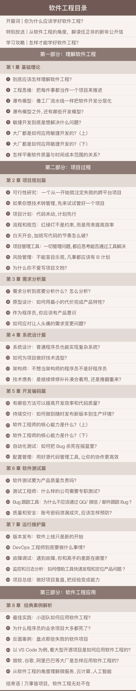

我最近在极客时间上跟着学完了《软件工程之美》这门课。
很显然，我对软件工程很感兴趣，这门课基本上每次一更新我就会马上看(大概一周更新3节课)，不是所有课我都学的这么积极。从课程结束语来看，课程的总字数将近30万字，也是一本小书呢。
作为计算机科学与技术专业毕业的同学，我学过软件工程。这是我在大三时上的课，现在想来，我对软工印象最深的是那本暖色封面的课本，不知因为什么原因泡了水，书本有点发皱。是的…这就是我对这门课最深的印象。很惭愧，应该是没怎么上课。
其实我在很久以前，就接触过一本业内人士都交口称赞的软件工程书《构建之法》，但当时(大概是大二)，我对这本书中的很多内容都感到迷茫，不明白在讲什么，也不知道该怎么理解。原因也很简单，我完全没接触过”软件工程”，也没遇到过具体的工程问题。
我认识到，最有效的学习就是带着问题的学习，或者说，能和你的工作场景、你的现有知识结合起来的学习。所以我对《软件工程之美》的学习热情如此之高，毕竟课程中讲的许多问题，正是正在发生在我身上，或者发生在我身边的事情。
要说课程给我带来的最大收获，是带给了我对软件工程的大局观认知。或者说，至少让我知道了，如果我想从大局观的角度看待软件工程，我需要知道哪些事。打个比方，课程指出，软件的质量由时间、范围、成本三大要素造就，这是一个非常通用的、有效的看待软件工程的角度。
因为一切工程都是现实问题，既然是现实问题就得考虑资源问题。什么是时间、范围和成本呢？比如说，老板下命令，项目要提前2周上线，也就是时间要素要减小。那如果仍然要保障质量(在绝大多数情况下，软件工程都不会牺牲”质量”)，要么就砍范围（少做几个功能），要么增加成本(多派两个工程师)。那如果老板说，功能一个都不能少，资源也就这么多了，大家咬咬牙努力一下！那老板就很可能要承受软件交付质量下降的代价。这简直太常见了，BUG频发，技术债务都要利滚利了。
这就是一种看待软件工程的视角，在这门课里还学到了很多类似的角度，但时间-范围-成本→质量，是我印象最深的一点。
在写上面这段文字的时候，我想起来我在学校的时候上过一门课，好像也是讲软工，或者是讲敏捷开发，我记不太清了，是苏航老师。很惭愧，这门课我也没太认真听（唉，我承认，我的整个大学生涯都没太好好听课，这样其实不太好，小朋友们不要学我）。但是有那么一节课，有那么一瞬间，我专心听讲的那么一小会，我记得老师在讲”trade-off”，也就是”权衡”或者说”此消彼长”，大意是说，软件工程就是一个”trade-off”的问题。就这么句简单的话，随着自己的代码越写越多，就显得愈发有力。软件的设计、开发、交付过程，”trade-off”无处不在。
当然，在很多情况下，一个安分守己的程序员确实不用考虑太多问题，但是，只要软件工程想要成功，就必须有人考虑这些问题。我提出一个独家观点，就是不止需要一个人或者一两个领头的人需要关注这些问题，而是一个比例问题，也就是软件项目团队中有超过百分之多少的人需要关注工程问题，这个工程才有更大的概率成功。不过具体阈值是多少，我也不知道，还需要摸索一下。
很惭愧，如果读者你是一个正在上学的小朋友，请好好听课，尤其是认准那些在教你真家伙的老师，然后好好听课。
《软件工程之美》都讲了些什么呢？基本如下所示：
- 基础理论
- 项目过程
- 需求分析
- 系统设计
- 开发编码
- 软件测试
- 运行维护
- 经典案例解析
其中我收获最大的是靠前的部分，也就是基础理论、项目过程、需求分析、系统设计、开发编码。从这个角度来看，这门课不仅仅是在讲软件工程，而是在介绍一个软件工程师乃至架构师的必备知识。或者说，这门课在很大程度上，就像是我在这个行业中蹒跚起步的指南(极客时间上也有很多具有同类效果的课，一并感谢)。
我相信，评判学习过程的好坏，一个有效的检验标准是，学习到的知识是否能够真正为自己所用。从这个角度，我想了一下，我如今看待软件工程有哪些观点：
- 最首先的，敏捷开发是好的。小步快跑、关注交付、关注反馈。
- 用户的需求应是开发工作最根本的驱动力，而且得是真实的需求。
- 在产品前期，始终确保技术团队和产品的用户有直接联系，面谈好于电话，微信好于传话。
- 以终为始，在整个软件开发过程中，始终确认软件开发的目的。
- 警惕过度设计，最小化地设计架构。交付优先，而不是技术优先。
- 补充上一条：预测未来并不靠谱，少做预测。
- 作为程序员，有义务关注产品，有必要关注项目。
- 用好工具，将开发过程充分透明化，用工具解放低效的工作。
- 在边界范围内做事，除非[时间]、[资源]两个要素非常充裕，否则只用简单的、熟悉的技术。
以上简单罗列了一些我看待软件工程的方式。其中的很多一定会在将来产生变化，甚至被我自己否定，也一定会或早或晚新增很多条目。这都很好！我一点都不担心否定过去的自己，这当然是一件好事。我这个人对自己的主观观念往往态度坚定，当然有时候是过于坚定了。我始终相信，主观优于客观，表达优于对错。如果我不表达出我的阶段性观点，我的态度，如果我不去落实我所相信的观念，我又怎么会有机会去获取反馈以矫正我的错误？这是我的观点。
显然，软件工程这件事是我的一大职业兴趣。有时候在聊天的时候，会提到”认识自己”这个话题。我们所有人都同意，认识自己是一个困难的事，也很大可能是一个持续终生的事。但至少，我能通过这么一门课程，在我当前的职业阶段中，认识到一个自己感兴趣的具体领域，这不啻为一件幸事。能花几十块钱，让行业内最优秀的那一批人的知识为我所用，我想这首先是软件行业的幸运，其次是从业者们和我的幸运。
《软件工程之美》这门课我肯定还会再学一遍，同时我相信，等我这次再看《构建之法》这本书的时候，一定会比两年前有更深刻、更切实的体会。就像是我高中和大学时两次读《浪潮之巅》，感受差别之大有如读新书，相信下次再看也是一样。《浪潮之巅》正好要出第四版了，笑，又能买书了。
总之，如果大家也想买这门课，欢迎通过文章末尾的海报扫码购买，你会比直接在App购买省一点钱，我也能拿到返现，以后接着买课呗。
2019年06月21日 怀柔
